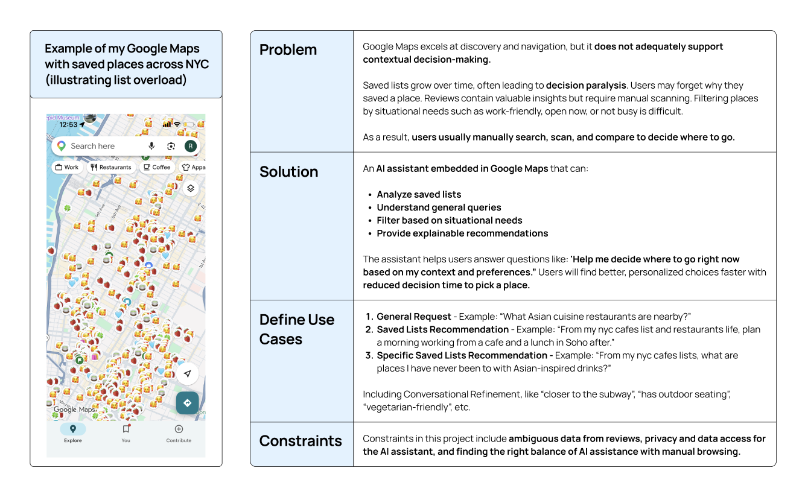
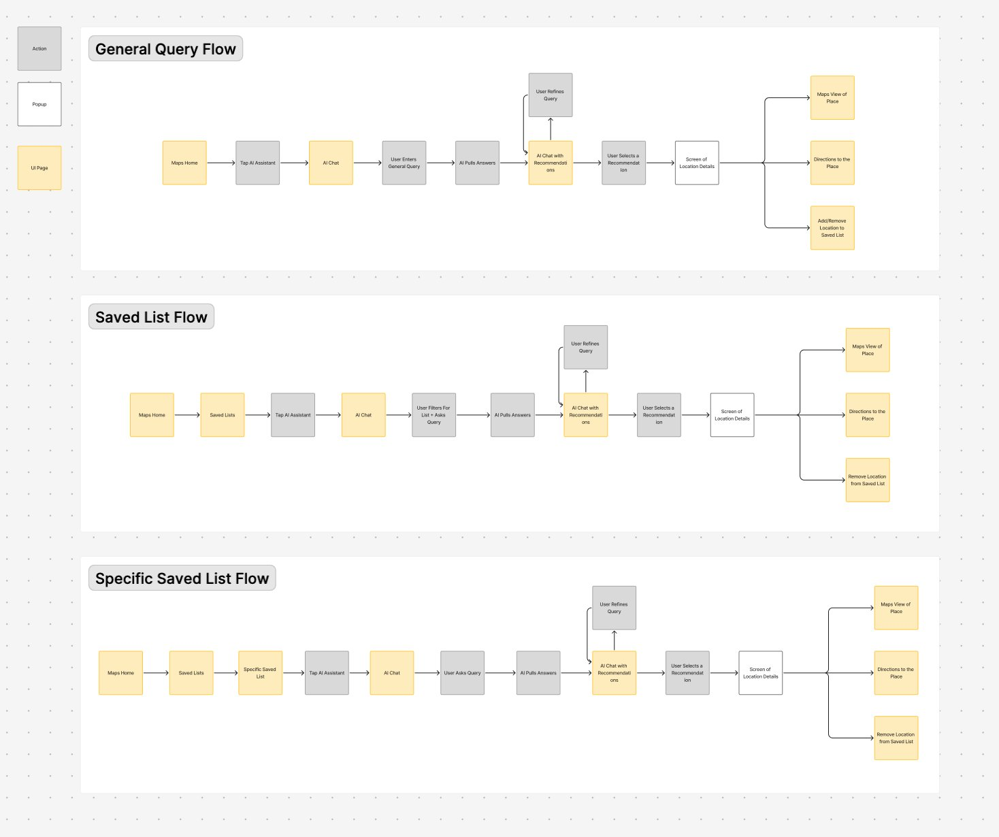
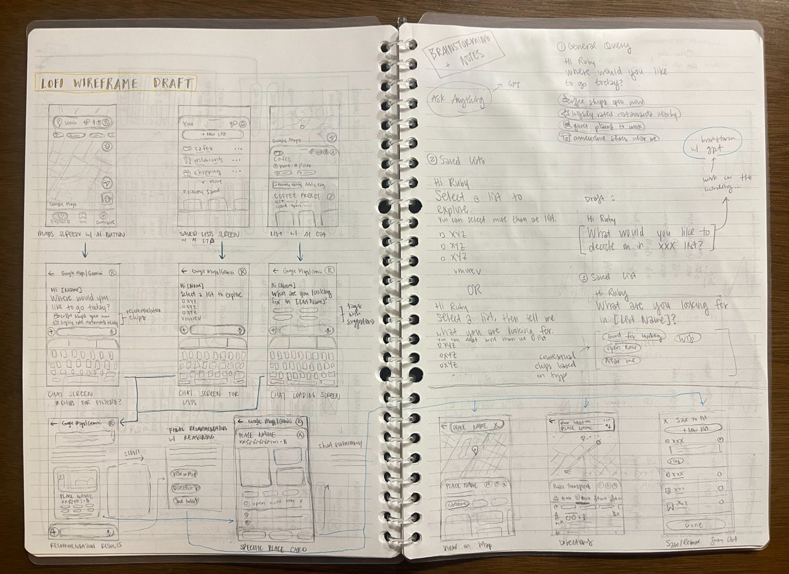
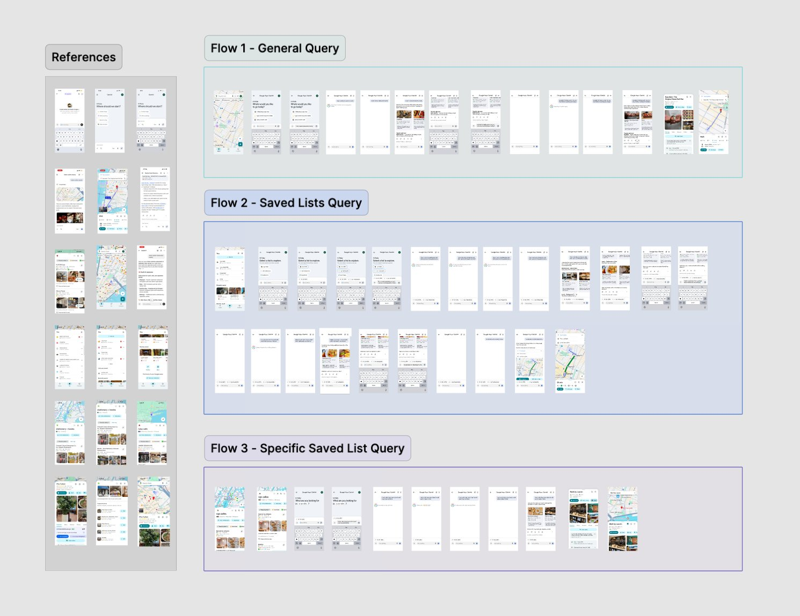

Introduction
Living in New York City, there are endless restaurants, cafes, and shops to discover. To keep track of places I want to try, I frequently use Google Maps' saved lists and organize them by category (cafes, food, bookstores, etc.).
Over time, however, these lists grew into hundreds of saved places, making them difficult to use when I actually needed them. Instead of helping me decide where to go, they often created decision fatigue. I would scroll through long lists, forget why I saved certain places, and still end up manually checking reviews, ratings, and distance before deciding.
This led me to think: "What if Google Maps had an AI assistant that could help me decide where to go in the moment?"

Ideation & Research
I began this project from a personal pain point: having a large number of saved places in Google Maps, but still struggling to decide where to go in the moment.
To explore this further, I focused on the following areas:
| Area | What I Did | Key Insight |
|---|---|---|
| AI Interaction Patterns | Tested ChatGPT, Claude, and Gemini with real-world queries (e.g., "quiet café with Wi-Fi", "lunch in Soho") | AI is strong at generating options, but lacks structured, actionable outputs for quick decisions |
| Google Maps Analysis | Analyzed Maps UI, search flow, place details, and saved lists | Maps supports discovery well, but not decision-making across multiple saved places |
| User Insights | Spoke with friends and peers who frequently use Google Maps and the saved lists feature | Users accumulate too many saved places and forget why they saved them — and even when they do remember, newer saves bury older ones, making it easy to lose track of places added just days ago |
| Competitive Insight | Reviewed Google Maps' experimental AI feature for Local Guides (2024) | Early AI features exist, but lack deep integration with saved lists and explainability |
Synthesizing my research findings, the goal of this project is to design an AI assistant that supports contextual, explainable decision-making using saved lists, reviews, and real-time user needs.
Stage 2User Flow Mapping & Wireframing
Research showed that users don't start a decision the same way every time. Sometimes they're browsing the map with no specific plan. Sometimes they open a saved list looking for a place they added weeks ago. And sometimes they're already inside a list, staring at too many options.
To support these different starting points, I mapped three distinct entry flows that all converge into the same AI-assisted experience. Each flow meets users where they already are in Google Maps — no new navigation patterns required.
Entry Flows
| Entry Point | User Intent | Design Rationale |
|---|---|---|
| General Query (Main Maps Screen) | Open-ended exploration. The user doesn't have a specific place in mind — they want the AI to help them discover and decide based on context (location, time, mood). | The AI button lives on the main Maps screen so it's accessible without any prior setup — lowering the barrier to first use. |
| Saved Lists (Saved Lists Screen) | The user has multiple saved lists and wants help choosing across them. They're not sure which list has what they need right now. | This is where decision fatigue is highest. Users see a wall of lists but no way to compare across them. The AI bridges that gap. |
| Specific Saved List (Inside a Saved List) | The user is already looking at a specific list and wants help narrowing down within it. They know roughly what they want but need the AI to surface the best match. | The most context-rich entry point. The AI already knows the list scope, so it can offer refining questions immediately — no cold start. |
User Flow Diagrams
The diagrams below show how each entry point moves through the AI experience. All three flows share the same core interaction pattern — ask, refine, recommend, act — but the starting context shapes what the AI asks first and how recommendations are framed.

Lo-Fi Sketches
Here are the lo-fi sketches where I started ideating the AI chat flow, from the initial entry points to the recommendation and place detail screens.

Stage 3Hi-Fi Design & Prototype
With the flows validated through wireframes and sketches, I moved into Figma to build out the full hi-fi designs and prototype. The goal was to make the AI assistant feel like it belongs inside Google Maps — not like a separate feature bolted on.
A few key design decisions shaped the final execution:
| Design Decision | Rationale |
|---|---|
| Familiar UI, new capability | The AI chat interface is modeled after Gemini's conversational UI — once a user taps the AI assistant button, they enter a dedicated chat screen. The visual language (card styles, iconography, color palette) stays consistent with Google Maps so the experience feels integrated, even though the chat itself is a separate view. If the assistant looked or behaved differently from the rest of Maps, it would feel disconnected. |
| List chips in the chat input | When a user selects saved lists to search within, the list names appear as chips inside the text input. In a multi-turn conversation, it's easy to lose track of what the AI is searching across. The chips keep that context visible throughout the entire chat, so the user always knows which lists are active without scrolling back. |
| Recommendation cards over list results | Users need to compare places quickly without tapping into each one. Recommendation cards surface the key info at a glance — name, rating, distance, and an AI-generated summary from reviews — so users can evaluate and decide without leaving the conversation. |
Hi-Fi Screens

The Outcome
The final design is my take on what an AI assistant inside Google Maps could look like — one that helps users make faster, more confident decisions about where to go. Instead of endlessly scrolling through saved lists, scanning reviews, and second-guessing, users can have a conversation that surfaces the right place based on what they actually need in the moment.
Flow 1: General Query
Starting from the main Maps screen with no particular place in mind:
- The user taps the AI assistant and is greeted with contextual prompts.
- The user types a query like "Asian cuisine restaurants nearby."
- The assistant responds with recommendation cards — each showing ratings, distance, and a summary from reviews.
- A top pick is highlighted with reasoning for why it's the best match.
Flow 2: Saved Lists
The user wants to find a place to study and eat, and has a few saved lists that could help:
- The user taps the AI assistant from the saved lists screen.
- The user selects which lists to search across.
- The assistant compares places from multiple lists at once and surfaces the best matches.
- The user asks follow-up questions to compare options and make their final decision.
Flow 3: Specific Saved List
The user is already inside a specific saved list:
- The user taps the AI assistant from within the list.
- Since the list is already selected, there's no need to filter for a list — the user goes straight to asking their question.
- The assistant can also filter by list tags — for example, if the user asks for "cafes I've never been to," it pulls from places tagged "never been."
- The user reviews the results and makes their final decision.
Reflection
Learnings
This project pushed me to think deeply about how AI-powered features actually work — not just how they look, but how a conversational assistant should respond, surface information, and guide decisions. I also learned a lot about integrating AI into familiar UI patterns so the experience feels native, not like a separate product.
Challenges
The biggest challenge was finding the right balance between useful information and simplicity. I wanted recommendation cards to be rich enough to help users decide, but not so dense that they felt overwhelming. The same tension came up with explainability — how much reasoning is helpful versus how much just adds clutter.
If I Had More Time
I'd expand the assistant beyond single decisions to full trip planning — going from "where should I eat tonight" to "plan my day in Tokyo using my Japan saved list." I'd also flesh out additional features like chat history, the ability to edit queries after submitting, and other interaction refinements that would make the assistant feel more complete.
Takeaway
Conversational AI could help Google Maps evolve from a navigation tool into a decision assistant — one that doesn't just show you where things are, but helps you decide where to go. Near the end of this project, Google released Ask Maps — validating that this was a real problem space worth designing for, and reinforcing the growing need for AI-powered decision-making within Maps.